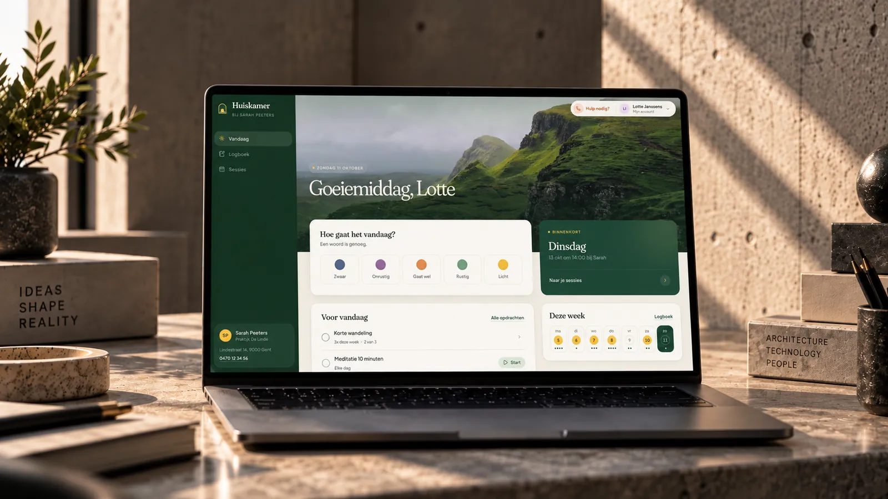
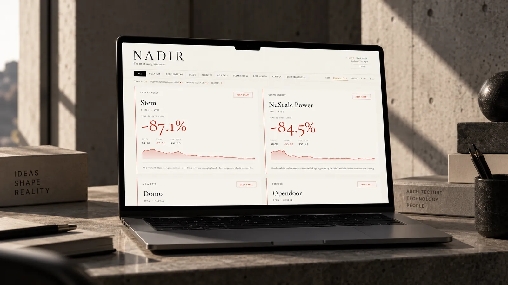
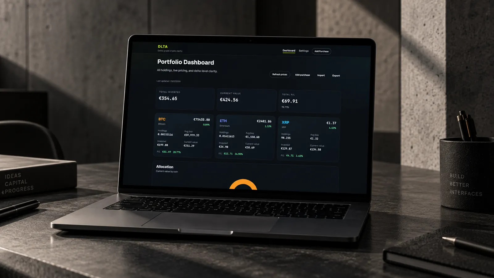
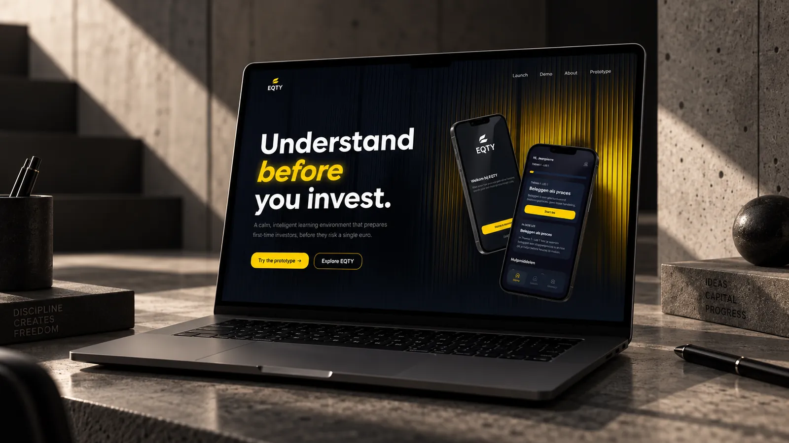

2X8 zelf
Een aanvraag op onze site wordt een offerte, komt in Notion, wacht op akkoord en wordt een factuur. Niemand typt iets over.
Automatisatie Eigen projectTools en automatisatie
We kijken hoe je nu werkt, vinden waar je tijd verliest en programmeren dat weg. Met de software die je al gebruikt. Jij hoeft niets te kennen van software.
Herken je dit?
Vaak zit de winst in twee of drie handelingen die niemand nog opmerkt, omdat ze er altijd al waren.
Demo, met voorbeeldgegevens
Je klantenlijst staat in Google Sheets, met hoe lang je bij elke klant blijft. De tool plant de route. Klik een klant aan of uit en kijk hoe alles meeschuift.
| Klant | Tijd | Mee |
|---|---|---|
| Restaurant in Lochristi | 20 min | |
| Traiteur in Wetteren | 15 min | |
| Bistro in Gent | 25 min | |
| Hotel in Destelbergen | 10 min | |
| Brasserie in Lokeren | 20 min | |
| Eethuis in Merelbeke | 15 min |
Hoe een pilot werkt
Automatiseren begint niet bij een tool, maar bij een uur. Welk werk doet iemand elke week opnieuw, en wat kost dat?
Gratis pilot
Voor de eerste bedrijven bouwen we een pilot zonder kosten. In ruil deel je de cijfers met ons en mogen we er een case over maken.
We bouwen verder op wat je al hebt, zoals
Werk
Van onze eigen offertes tot dashboards en een platform voor psychologen.
Een aanvraag op onze site wordt een offerte, komt in Notion, wacht op akkoord en wordt een factuur. Niemand typt iets over.
Automatisatie Eigen project
Een prototype voor psychologen: sessies, logboek, opdrachten en facturen op één plek. Het uur gaat naar het gesprek.
Platform Eigen project
Een live dashboard dat toont welke aandelen het diepst gevallen zijn. Rustig, zonder tickerchaos.
Dashboard Eigen project
Een tracker die elke aankoop apart bijhoudt en live je winst en verlies berekent. Zonder account.
Dashboard Eigen project
Een app die beleggen leert als een proces: korte lessen en vragen die bepalen wat je daarna ziet.
App Eigen projectVragen
Met kijken waar de tijd naartoe gaat. Een gesprek van een half uur en een korte vragenlijst over de software die je gebruikt. Daarna zoeken wij uit wat er kan.
Meestal niet. We bouwen liever verder op wat je al gebruikt. Zit er echt iets in de weg, dan zeggen we dat, met een voorstel erbij.
Dat hangt af van wat er moet gebeuren. Je krijgt een voorstel met een prijs voor jouw plan. Voor de eerste bedrijven is de pilot gratis, in ruil voor cijfers en een case.
Je test het in je echte werk voor het vast staat. Wat in de praktijk niet blijkt te werken, zetten we samen recht.
Nee. We adviseren, richten in en koppelen. Een licentie neem je rechtstreeks, zodat je niet aan ons vastzit.
Contact
Plan een gesprek van een half uur. Je krijgt antwoord binnen twee werkdagen.